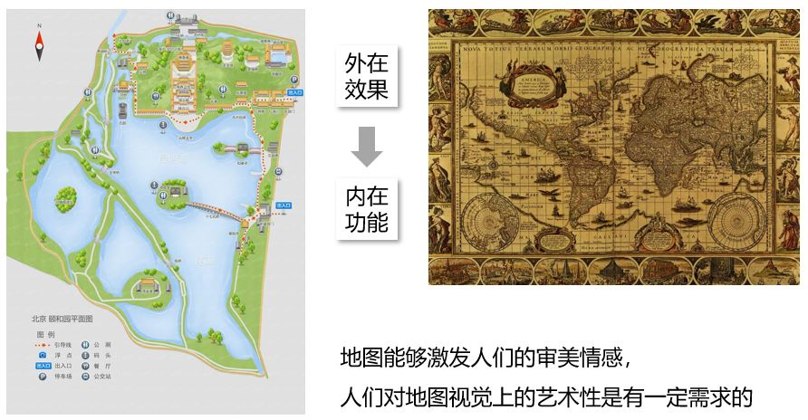
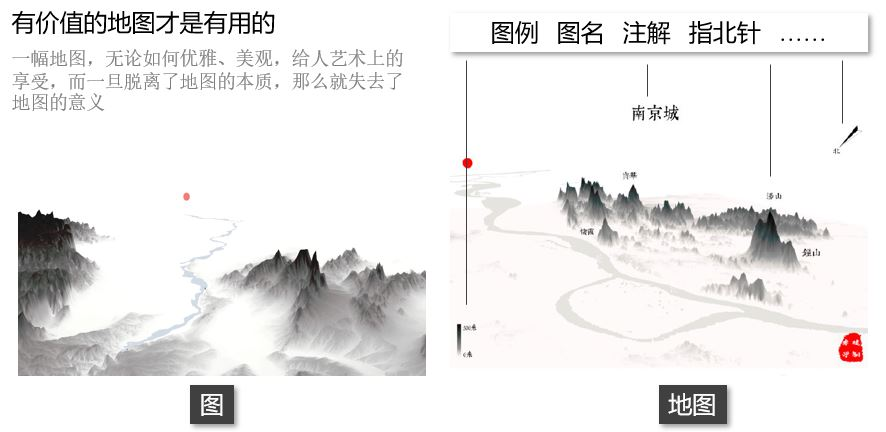
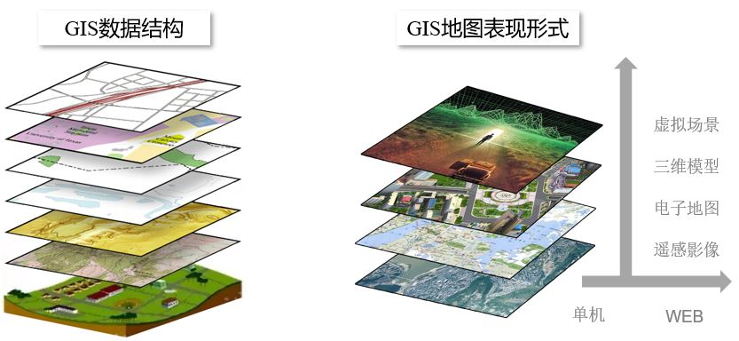
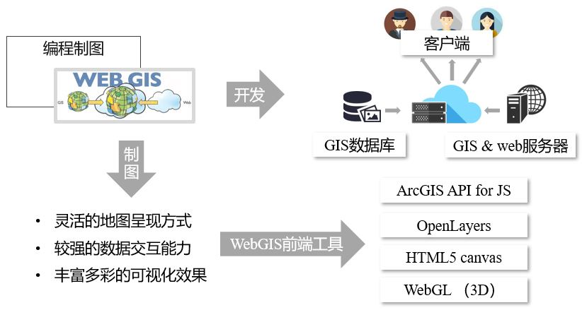
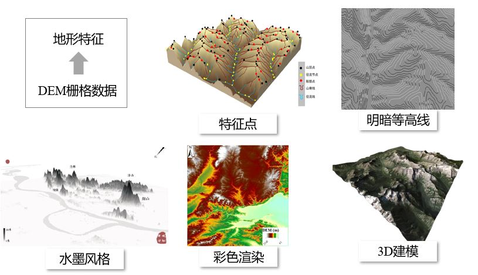

无论GIS的发展走向何处，作为地理学第二语言的地图永远是GIS最重要表现形式，善于制图是一名GIS专业人员应当具备的看家本领。如今，随着大数据、云平台等新技术的发展，传统地图制图学遇到很大的挑战和机遇。面对形式复杂多样、内容丰富多彩的GIS信息，如何利用GIS新兴技术，结合传统的地图学知识和理论，高效制作具有其固有价值而又给人以美感的地图，是新时代GIS地图制图的趋势。
地图制图不仅仅是简单的作图，它是一门很深的学问。记得大学刚开始接触并学习GIS时，同时必修的课程就有《地图学》，它作为GIS学科的基础之一，却往往没有得到应有的重视（当然这是就我个人经历和观察到的而言，可能会有些狭隘）。
首先从地图本身概念出发，地图是将客体（一般指地球）上的地理信息，通过科学的概括，运用符号系统表示在一定载体上的图形，以传递它在时间与空间上的分布规律和发展变化。因此，从功能和本质上来讲，地图是科学性的，它是描述地理信息在空间上的分布；从表现形式上来讲，地图是富有艺术性的，它是由抽象化的符号系统构成的。
当我们打开一幅地图，首先关注的是它的外在效果，然后才关注地图功能和内容，这就说明了地图能够激发人们的审美情感，人们对地图视觉上的艺术性是有一定需求的。

但是，有价值的地图才是有用的。
一幅地图，无论如何优美、雅观，给人艺术上的享受，而一旦脱离了地图的本质，那么就失去了地图的意义。就以下两幅水墨山水画风格的地图为例。它们的区别在于右图有较为丰富的符号注解，包括图名、图例、指北针等。当我们看到这两幅地图，虽然是同样的制图风格，但它们给予我们的感受是不同的，从地图学的角度看，右图更符合我们的地图审美观。由于这些地图要素的存在，才使得一幅地图有了灵魂，具有其应有的价值。
否则，仅仅是一张图而已。

因此，地图制图的艺术不仅仅体现在地图视觉上的美，而更在于其表现得内在意义。最大化的实现地图价值，才是地图真正的艺术之美。
我觉得这一点应当是我们从事GIS行业需要具备的最基本的专业素养。
现代GIS技术的发展，为传统的地理学理论和技术带来了革命性的变化，这同样在地图制图方面也发生了有别于传统制图方法的技术革新。
首先看GIS的数据结构。在GIS中，自然客观要素被抽象概括为两种主要结构，矢量和栅格。这个抽象化表达的过程本身，就存在美学特征。我们通常讲，艺术来源于生活，那么，GIS地图的美来源于自然空间。
再看GIS地图的表现形式，或者说地图可视化的呈现方式。从遥感影像、电子地图，到三维地图、虚拟场景；从单机到Web端等，表现形式多式多样，可视化的效果也是越来越让人眼花缭乱。

无论数据结构简单或是复杂，地图表现形式抽象还是具象，其本质都在于有效的表达自然客观事物，而如何去表达，就是GIS制图的艺术所在。
GIS制图方法主要是指，当我们拿到制图数据并已知要做什么样的图后，如何把地图做出来？不同于传统手工的地图制图，GIS以及现代地图制图技术发展至今，为我们提供了多种可选择的制图手段。
我们熟悉的也是使用最多的制图工具应该是ArcGIS，它是桌面GIS制图软件的典型代表，尤其是新一代桌面系统ArcGIS Pro，带给我们全新的制图体验，如智能制图、多属性符号系统、3D制图模式、动态地图、甚至可共享至Web端等。
这是桌面GIS制图软件的典型代表，相信它们已经能够解决很大部分的制图需求，但是面对大批量制图任务，比如制作上百幅相同格式不同数据地图，利用软件手动操作就显得十分笨拙了。
这时候，利用计算机语言编程就是一个可行的手段。现在我们利用编程制图也不需要从底层写代码，常用的编程语言已经存在用于地图制图的第三方库，比如Python的Geopandas、NCL等，R语言的rasterVis、plot3D等
互联网时代已经使得网络成为了我们日常生活、工作和学习中必不可少的一部分,WebGIS也随之产生，并已渗入我们日常生活。WebGIS不但是一种开发技术，同样是一种非常高效的制图工具。
本质上讲，WebGIS也是编程制图的一种，只不过使用的是web端的计算机语言。但WebGIS灵活的地图呈现方式，是大数据制图或有特殊专题制图需求的很好的选择。有人可能觉得用WebGIS技术制图，实在是大材小用，实现成本太高，其实我们用它来做图不需要像WebGIS开发一样有完整的框架，GIS服务器、web服务器，比如Tomcat、ArcGIS Server、GeoServer等，而只需要前端技术就可以，制图目的就是把地图展示出来即可。学习这么多年也接触不少WebGIS前端工具，常用的比如ArcGIS API for JavaScript、OpenLayers，甚至是不是专门做WebGIS的一些web技术，比如HTML5 canvas、WebGL，都是可以选择的Web制图工具。有些WebGIS前端工具制作的地图远不是软件做的图能比的。做出来的图非常漂亮，制图效率也很高。

以上是对GIS制图方法的一些经验总结，下面介绍一下关于数据表达的形式。当我们拿到地理空间数据，无论采用什么样的方法，以什么样的形式呈现出来，才能表达或体现出该数据的价值，是一个值得思考的问题。
比如说，我们想表示一个区域的地形特征，以DEM栅格数据为例，就有多种表现的形式。比如利于各种算法结合的特征点表示法，既有等高线基本功能、又有立体感的明暗等高线，写论文时经常用到的彩色渲染或叠加山体阴影的立体渲染，能够展示立体地形的3D建模，亦或是“中看不太中用”的水墨山水画风格地图等。

数据的表现形式有多种，选择何种表现形式，还是由具体的制图目标决定的。很难去总结不同数据类型适用于何种表现形式，不同类型的数据，在不同行业领域，针对不同制图需求，就有无数种组合。
这里只能给出一些建议，当前GIS技术能够带给我们灵活的、绚烂的制图手法和呈现方式，我们也要具备这种灵活的思维模式，充分利用新技术、新方法，高效制作具有其固有价值而又给人以美感的地图，这正是我要表达的GIS制图的艺术。
当然，地图制图是GIS的本领，但GIS的本领也绝不仅限于此，尤其在信息时代。越来越多的事实证明，随着新兴技术的发展，GIS并没有被抛弃，反而焕发出新的活力与生机。

GIS以及GIS地图制图不仅仅是一种技术，也是一门艺术，更是一种情怀。
Fighting, GISer!
最新博文